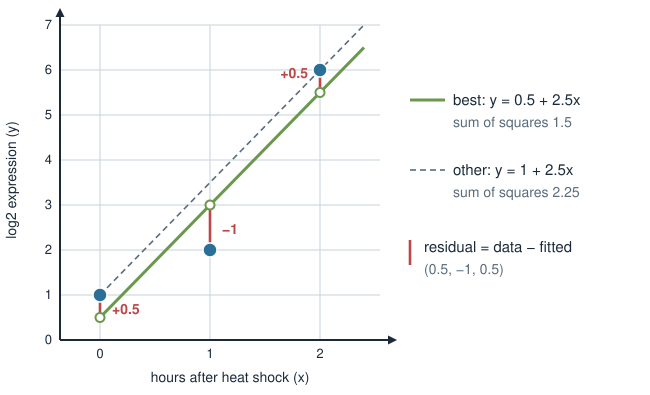
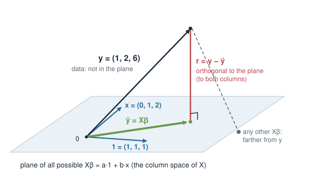

Every linear model you fit, with lm, limma or DESeq2, has to find the coefficients \boldsymbol\beta somehow. Today: how, and why it is the Week 1 projection in disguise.
Fitting a line to a few points gives more equations than unknowns: no exact solution.
Least squares: pick the line with the smallest sum of squared residuals.
The geometry: the fitted values are the projection of the data onto the columns of X, and the residual is orthogonal to every column.
That gives the normal equationsX^\mathsf{T}X\boldsymbol\beta = X^\mathsf{T}\mathbf{y}, which is what lm solves.
When X^\mathsf{T}Xcannot be inverted, there is no unique \boldsymbol\beta.
Recap: the shadow is the closest point
From Vectors, dot product & projection: the shadow of \mathbf{u} on the line through \mathbf{v} is
Column 1 of X is all 1’s (the intercept); column 2 is the hours \mathbf{x}. This is the design matrix of y ~ x.
3 rows (samples) and 2 columns (coefficients): over-determined, Case 2 from Linear systems in R. No exact solution.
solve(X, y) refuses: X is not square.
So we change the question: not “which \boldsymbol\beta fits exactly?” but “which \boldsymbol\beta fits best?”
“Best” = smallest sum of squared residuals
For any line, the residuals are data minus fitted: \mathbf{r} = \mathbf{y} - X\boldsymbol\beta.
Least squares picks the \boldsymbol\beta that makes \lVert\mathbf{r}\rVert^2 = \mathbf{r}\cdot\mathbf{r}, the sum of squared residuals, as small as possible.

The best line is y = 0.5 + 2.5x: residuals (0.5, -1, 0.5), sum of squares 0.25 + 1 + 0.25 = 1.5. The line through the first and last point misses the middle one by 1.5: sum of squares 2.25.
The picture: project \mathbf{y} onto a plane
Think of \mathbf{y} = (1, 2, 6) as one vector in 3-D, one axis per sample.
Every possible fit X\boldsymbol\beta = a\,\mathbf{1} + b\,\mathbf{x} is a combination of the two columns of X. All of them together form a plane: the column space of X.
\mathbf{y} is not in the plane (no exact solution).
The closest point of the plane to \mathbf{y} is the projection\hat{\mathbf{y}}, and the residual \mathbf{r} = \mathbf{y} - \hat{\mathbf{y}} is orthogonal to the plane.

The residual is orthogonal to every column
“Orthogonal to the plane” means orthogonal to both columns of X. Check with the best fit, \mathbf{r} = (0.5, -1, 0.5):
\mathbf{1}\cdot\mathbf{r} = 0: the residuals sum to zero; the line passes through the average point.
\mathbf{x}\cdot\mathbf{r} = 0: what is left over has no trend with x; nothing more the slope can explain.
For the other line, y = 1 + 2.5x, the residuals are (0, -1.5, 0) and \mathbf{1}\cdot\mathbf{r} = -1.5 \ne 0: not orthogonal, so not the best.
The normal equations
Write the “dot product with every column” in one go. X^\mathsf{T} (transpose, t(X) in R) is X with rows and columns swapped, so its rows are the columns of X, and X^\mathsf{T}\mathbf{r} stacks the dot products \mathbf{1}\cdot\mathbf{r} and \mathbf{x}\cdot\mathbf{r}:
The coefficient \frac{\mathbf{y}\cdot\mathbf{1}}{\mathbf{1}\cdot\mathbf{1}} is the sum divided by the count: the mean.
The residuals \mathbf{y} - \bar{y}\,\mathbf{1} are the deviations from the mean, and their squared length is what the variance is built from.
coef(lm(y ~1)) # 3mean(y) # 3
When X^\mathsf{T}X cannot be inverted
The projection \hat{\mathbf{y}} always exists. But \boldsymbol\beta is unique only when the columns of X are independent.
All samples measured at the same time, \mathbf{x} = (1, 1, 1): the two columns are identical, the “plane” is only a line.
x <-c(1, 1, 1)X <-cbind(1, x)t(X) %*% X # 3 3 / 3 3: singularsolve(t(X) %*% X, t(X) %*% y)# Error ... system is exactly singularcoef(lm(y ~ x)) # (Intercept) 3 x NA
Any a + b = 3 gives the same fitted values: Case 3, infinitely many \boldsymbol\beta.
Dependent columns in real designs (batch = treatment, the dummy trap) and more columns than samples are next in Design matrices for covariates. Fixing p > n with a penalty comes in the penalized-models block.
Summary
Concept
Key fact
R
Over-determined
more samples than coefficients: no exact \boldsymbol\beta
solve(X, y) fails
Least squares
minimise the sum of squared residuals \lVert\mathbf{y} - X\boldsymbol\beta\rVert^2
lm(y ~ x)
Geometry
fitted values \hat{\mathbf{y}} = X\boldsymbol\beta = projection of \mathbf{y} onto the column space of X
fitted(fit)
Orthogonality
residual has dot product 0 with every column of X
t(X) %*% resid(fit)
Normal equations
X^\mathsf{T}X\boldsymbol\beta = X^\mathsf{T}\mathbf{y}: square, one equation per coefficient
solve(t(X) %*% X, t(X) %*% y)
Intercept only
the best constant is the mean
coef(lm(y ~ 1))
Not unique
dependent columns: X^\mathsf{T}X singular, lm reports NA
qr(X)$rank
Next:Design matrices for covariates: building X for real experiments (treatment, sex, age, batch). The fitting step is always the one from today.